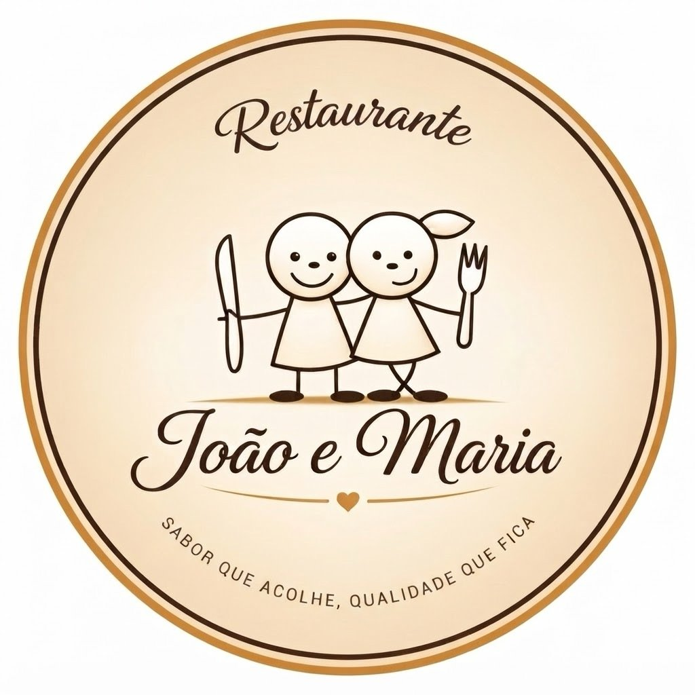

À mesa com João e Maria
Um pouco de cada sabor.Um prato com a sua vontade.
Comida que acolhe
Cor no seu prato
Para acompanhar
Mais um pouquinho
Esperamos você
Em caso de alergias ou restrições alimentares, consulte a equipe sobre os ingredientes e o preparo.
Não encontramos esse item. Tente outro nome ou outra categoria.